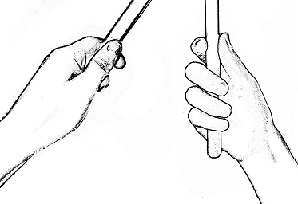
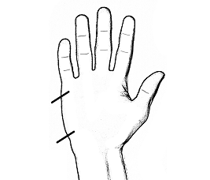
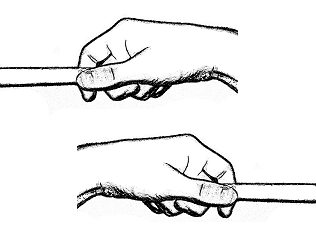

A relaxed, natural grip is essential for effective drumming. The grip described below is called the Matched Grip. In this grip sticks are held the same way in both hands, with palms facing down. It is the most versatile of all the percussion stick/mallet grips.
Step 1
Hold the stick with the balance point between the flat part of your thumb and the first joint of your index finger. For most sticks the balance point is located about a third of the length of the stick from the butt.
Step 2
Let the butt of the stick rest on the soft part of the palm of your hand. This area absorbs a lot of the shock and energy of the stick and is located below your pinkie and just above the wrist.
Step 3
Wrap your remaining three fingers loosely around the stick and do not squeeze. Do not close the gap between your thumb and index finger.
Step 4
Keep your palms facing down, with your elbows hanging loosely by your side. Sit with proper posture without slouching. Good posture will relax your body and help you to maximize your movements and energy.